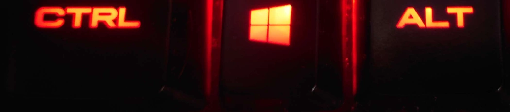

The following shortcuts are commonly used to perform certain word processing tasks. These are particularly useful when moving things from 1 part of a document to another, or a different document entirely.
- CTRL + A - Select all - This will select all content in a given area. For a normal document this will be the entire document. Can be used within most software and areas of your OS.
- CTRL + C - Copy - This will copy any selected content to your clipboard. By default you can only have 1 item on your clipboard at a time, but the WINDOWS + V shortcut can be used to change that. Can be used within most software and areas of your OS.
- CTRL + X - Cut - This has exactly the same functionality as copy, with the addition of removing the selected content from its original location when you paste it somewhere. Can be used within most software and areas of your OS.
- CTRL + V - Paste - This will place whatever is on your clipboard into the selected location. Can be used within most software and areas of your OS.
- CTRL + Z - Undo - This will undo the last action performed. For example it can remove a bulk of text that was pasted in the incorrect place. You are not limited to 1 undo at a time. This has uses throughout your OS and on a lot of software.
- CTRL + Y - Redo - This will redo an undo action, assuming that no other actions have been performed since the undo. You are not limited to 1 redo at a time. This has uses throughout your OS and on a lot of software.

The shortcut keys can normally be found along the bottom and left edges of a keyboard.